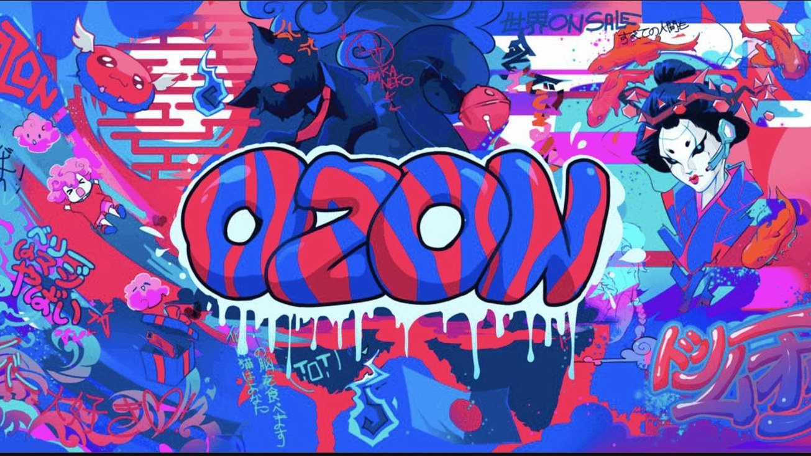
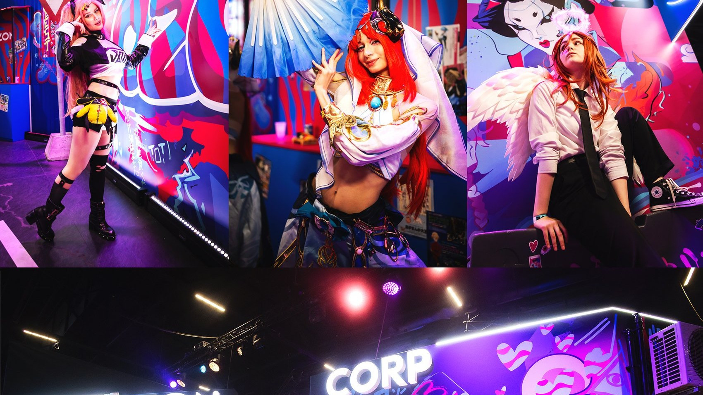

ozon corp
- клиент
- Ozon
- год
- 2025
- отрасль
- e-commerce
- направления
- btl, event-маркетинг
- награды
- silver · silver mercury
bronze · silver mercury
bronze · red apple
задача
добиться, чтобы фанаты аниме и комиксов приняли бренд, заинтересовались локацией и сделали фото для соцсетей
идея
перепридумать бренд под аудиторию: превратить Ozon в OZON CORP, мегакорпорацию из киберпанк-вселенной
как сделали
- {01}дизайн локации
переулок в азиатском мегаполисе будущего — граффити, неон, светофоры, потрескавшийся асфальт
- {02}предпродакшн
концепт-арт закрыл всё вплоть до материала вывески и надписей на стенах, маршруты гостей проверили на 3D-макете
- {03}интерактивные экраны
камеры наблюдения снимали гостей, изображение выводилось на ретро-телевизоры
- {04}UGC-механика
за опубликованное фото на локации гость получал жетон для автомата с сертификатами Ozon



результат
2 000гостей бренд-зоны
12%дали качественный контакт
100%эффективность UGC-механики